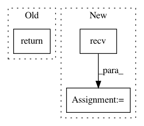

2708ccddd59bc7be358dc8ae8297dce26f545741,grid/websocket_client.py,WebsocketGridClient,run_remote_inference,#WebsocketGridClient#Any#Any#Any#,382
Before Change
)
)
return self._return_bool_result(result, return_key="prediction")
After Change
"encoding": self._encoding,
}
self.ws.send(json.dumps(payload))
response = json.loads(self.ws.recv())
if response["success"]:
return torch.tensor(response["prediction"])
else:
raise RuntimeError(response["error"])
In pattern: SUPERPATTERN
Frequency: 3
Non-data size: 3
Instances
Project Name: OpenMined/Grid
Commit Name: 2708ccddd59bc7be358dc8ae8297dce26f545741
Time: 2019-10-04
Author: ionesiojr@gmail.com
File Name: grid/websocket_client.py
Class Name: WebsocketGridClient
Method Name: run_remote_inference
Project Name: invesalius/invesalius3
Commit Name: 55dd5d8d1e6f5ee614eb8988f1b865435c5ff492
Time: 2010-01-07
Author: paulojamorim@gmail.com
File Name: invesalius/reader/analyze_reader.py
Class Name:
Method Name: ReadAnalyze
Project Name: OpenMined/Grid
Commit Name: 2708ccddd59bc7be358dc8ae8297dce26f545741
Time: 2019-10-04
Author: ionesiojr@gmail.com
File Name: grid/websocket_client.py
Class Name: WebsocketGridClient
Method Name: models